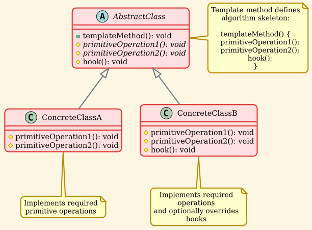
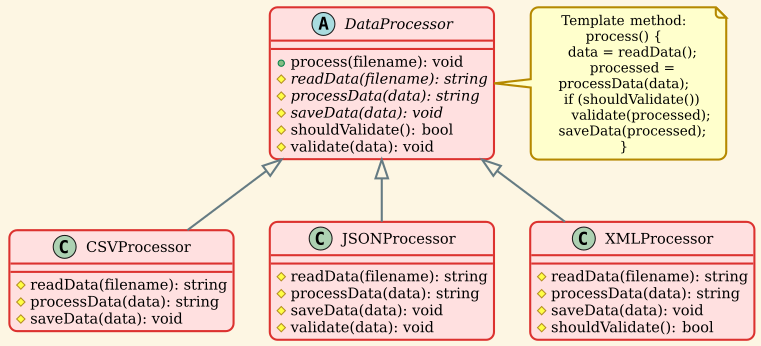
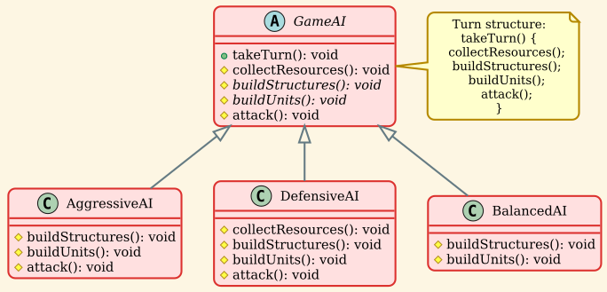
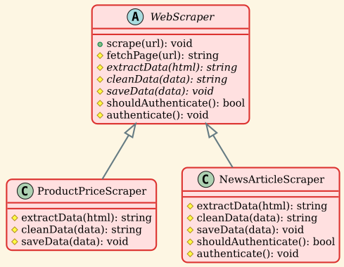
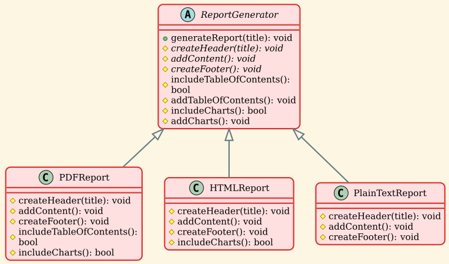
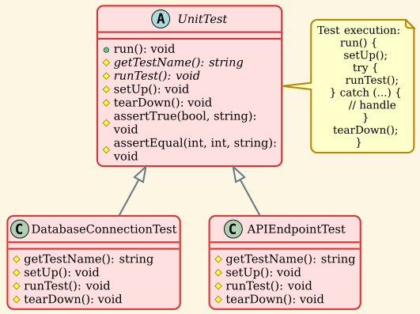
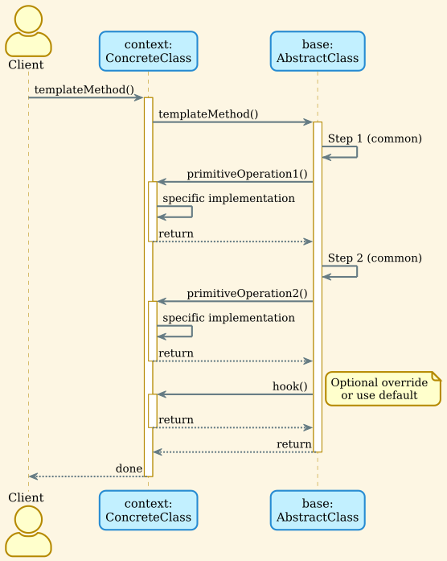

Template Method Pattern¶
Overview¶
The Template Method Pattern is a behavioral design pattern that defines the skeleton of an algorithm in a base class, allowing subclasses to override specific steps without changing the algorithm's structure. This pattern follows the "Hollywood Principle": "Don't call us, we'll call you" – the parent class calls the operations defined in subclasses.
Intent¶
- Define the skeleton of an algorithm in an operation, deferring some steps to subclasses
- Let subclasses redefine certain steps of an algorithm without changing its structure
- Promote code reuse by factoring out common behavior into a base class
- Ensure that the algorithm structure remains consistent across all implementations
Problem¶
When you have multiple classes that implement similar algorithms with slight variations, you often face:
- Code duplication across similar implementations
- Inconsistent algorithm structure
- Difficulty maintaining common behavior
- Risk of forgetting or misimplementing steps
- Scattered variations of the same basic algorithm
Solution¶
Define an abstract class with a template method that outlines the algorithm's structure. The template method calls primitive operations (abstract methods) that subclasses must implement, and hook methods (optional methods with default implementations) that subclasses can override if needed.
Structure¶
Class Diagram¶

Components¶
-
AbstractClass
- Defines the template method that calls primitive operations
- Contains the algorithm skeleton
- May provide hook methods with default implementations
- Declares abstract primitive operations
-
ConcreteClass
- Implements the abstract primitive operations
- Optionally overrides hook methods
- Inherits the template method from AbstractClass
-
Template Method
- Defines the algorithm structure
- Calls primitive operations and hooks in a specific order
- Should be final (non-virtual) to prevent overriding
-
Primitive Operations
- Abstract methods that subclasses must implement
- Represent varying parts of the algorithm
-
Hook Methods
- Methods with default (often empty) implementations
- Provide optional extension points
- Can be overridden by subclasses
Implementation Examples¶
Example 1: Data Processing Pipeline¶
Processing different file formats with a consistent pipeline.

Pipeline Steps:
- Read Data (primitive) - Format-specific reading
- Process Data (primitive) - Format-specific processing
- Validate (hook) - Optional validation step
- Save Data (primitive) - Format-specific saving
Usage:
Example 2: Game AI Template¶
Different AI behaviors sharing the same turn structure.

AI Turn Structure:
| AI Type | Collect | Build Structures | Build Units | Attack |
|---|---|---|---|---|
| Aggressive | Default | Barracks, weapons | Attack units | Aggressive assault |
| Defensive | Careful | Walls, towers | Defensive units | Counter-attack only |
| Balanced | Default | Mixed structures | Balanced army | Default strategy |
Usage:
Example 3: Web Scraper Template¶
Scraping different content types with a consistent process.

Scraping Process:
Usage:
Example 4: Report Generator¶
Generating reports in different formats with consistent structure.

Report Structure:
| Format | Header | TOC | Content | Charts | Footer |
|---|---|---|---|---|---|
| Logo + title | ✓ | Styled | ✓ | Pages + copyright | |
| HTML | CSS + nav | ✗ | Hyperlinked | ✓ | Contact + social |
| Text | Simple border | ✗ | Plain text | ✗ | End marker |
Usage:
Example 5: Unit Test Template¶
Testing framework with setUp-test-tearDown structure.

Test Lifecycle:
Usage:
Sequence Diagram¶

Real-World Applications¶
1. Unit Testing Frameworks¶
JUnit / Google Test / PyTest Pattern:
Consistent across all tests: - setUp → test → tearDown structure - Exception handling - Result recording
2. Web Frameworks (Django, Flask, Express)¶
HTTP Request Handling:
3. Compilers and Interpreters¶
Compilation Pipeline:
Different backends (x86, ARM, LLVM) implement code generation differently but share the same pipeline.
4. Game Development¶
Game Loop:
Every game follows: input → update → render, but each implements these steps differently.
5. Data Migration Tools¶
ETL (Extract, Transform, Load):
6. Sorting Algorithms (std::sort)¶
C++ Standard Library:
7. Document Parsers¶
Parsing Different Formats:
8. Database Connections¶
Connection Lifecycle:
Design Considerations¶
Advantages¶
✅ Code Reuse: Common algorithm structure is defined once in the base class.
✅ Consistent Structure: All implementations follow the same algorithm skeleton.
✅ Inversion of Control (Hollywood Principle): "Don't call us, we'll call you" - parent calls child methods.
✅ Hook Methods: Optional customization points with defaults.
✅ Open/Closed Principle: Add new variants without modifying the template.
Disadvantages¶
❌ Inheritance Dependency: Relies on inheritance, which limits flexibility.
❌ Liskov Substitution Violations: Subclasses might break expectations.
❌ Difficult to Follow: Control flow goes up and down the hierarchy.
❌ Class Explosion: Each variant requires a new class.
Template Method vs Strategy Pattern¶
| Aspect | Template Method | Strategy |
|---|---|---|
| Structure | Inheritance-based | Composition-based |
| Algorithm | Skeleton in base class | Entire algorithm in strategy |
| Binding | Compile-time (static) | Runtime (dynamic) |
| Flexibility | Less flexible (inheritance) | More flexible (composition) |
| Control | Parent controls flow | Client chooses strategy |
| Granularity | Steps of algorithm | Entire algorithm |
| Use case | Common structure, varying steps | Interchangeable algorithms |
Template Method Example:
Strategy Example:
When to prefer each:
- Template Method: When you have a well-defined algorithm structure with varying steps
- Strategy: When you need to switch entire algorithms at runtime
When to Use Template Method¶
✅ Use Template Method when:
- Multiple classes implement similar algorithms with minor variations
- You want to enforce a consistent algorithm structure
- Common behavior should be factored out to avoid duplication
- You're building a framework where users extend by overriding methods
- The algorithm structure is stable, but steps vary
Good Candidates: - Testing frameworks (setUp/test/tearDown) - Data processing pipelines - Document generators - Game loops - Compilers
❌ Avoid Template Method when:
- Algorithm structure varies significantly between implementations
- You need to switch algorithms at runtime
- You prefer composition over inheritance
- The hierarchy would become too deep or complex
- Only a small part of the algorithm varies
Use Simpler Alternatives: - Strategy pattern for runtime flexibility - Function pointers/lambdas for simple variations - Composition for combining behaviors
Best Practices¶
1. Make Template Method Non-Virtual¶
2. Use Descriptive Names¶
3. Minimize Primitive Operations¶
4. Document Override Requirements¶
5. Provide Meaningful Hooks¶
6. Use Protected Instead of Public¶
7. Consider Using NVI (Non-Virtual Interface)¶
Related Patterns¶
- Strategy: Similar intent but uses composition instead of inheritance. Strategy is more flexible at runtime.
- Factory Method: A special case of Template Method where one step is object creation.
- Bridge: Separates abstraction from implementation; Template Method uses inheritance for variation.
- Decorator: Adds behavior dynamically; Template Method defines behavior through inheritance.
Summary¶
The Template Method Pattern provides a powerful way to: - Define algorithm skeletons in base classes - Promote code reuse by factoring out common behavior - Ensure consistency across implementations - Control customization through primitive operations and hooks
Key Points:
- Inheritance-based - Uses class hierarchy
- Inversion of control - Parent calls child methods
- Compile-time binding - Variations determined at compile time
- Best for stable structures - Algorithm structure should be well-defined
When to Use: - Testing frameworks (setUp/test/tearDown) - Data processing pipelines with consistent steps - Document generators with fixed structure - Game loops with standard phases - Any algorithm with fixed structure but varying implementations
When to Avoid: - Need runtime algorithm switching (use Strategy) - Prefer composition over inheritance - Algorithm structure is unstable or varies significantly - Would result in deep inheritance hierarchies
The Template Method Pattern excels in framework design and situations where you want to define an algorithm's structure once and let subclasses fill in the details. However, be mindful of inheritance limitations and consider composition-based alternatives like Strategy when runtime flexibility is important.